Quick guide
Orthographic drawing (flat views)
- Draw FRONT, TOP and RIGHT SIDE views.
- Top view above the front view. Right-side view to the right of the front view.
- Line up matching edges across views.
- Use dashed lines for hidden edges.
Isometric drawing (3D picture)
- Use isometric paper: vertical lines and 30° lines.
- Start with the corner nearest to you.
- Draw the overall box first, then cut away parts.
- Draw lightly first, then darken the final lines.
Worked example: a photo frame
Frame 200 mm wide and 250 mm high, with a 120 × 170 mm window and a block foot. Sizes in millimetres.


Exercise 1 · Isometric to views
Look at each isometric drawing. Draw the front, top and right-side views on the grid. Each square is 1 cube.
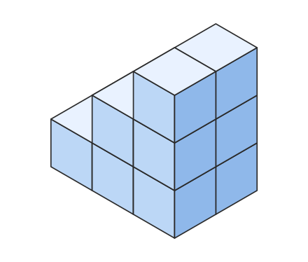
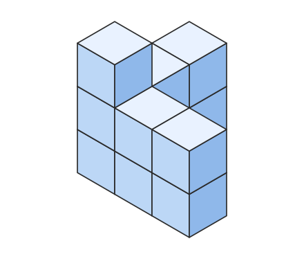
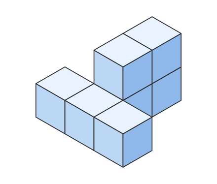
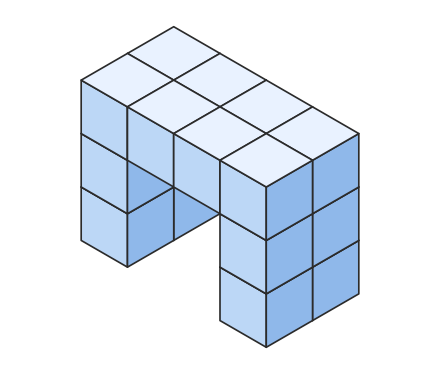
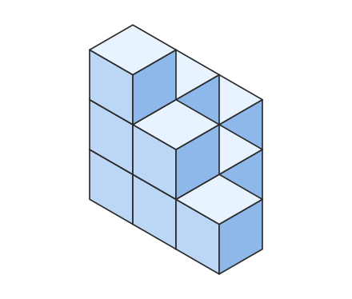
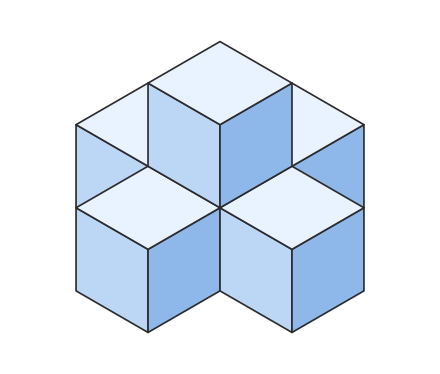
Exercise 2 · Views to isometric
Study the three views, then draw the object on your isometric paper.
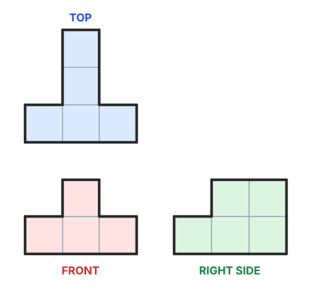
isometric paper
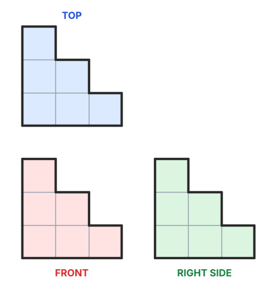
isometric paper
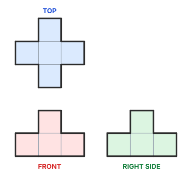
isometric paper
Exercise 3 · Match the views
Match each isometric drawing (A to D) with its set of views (1 to 4).
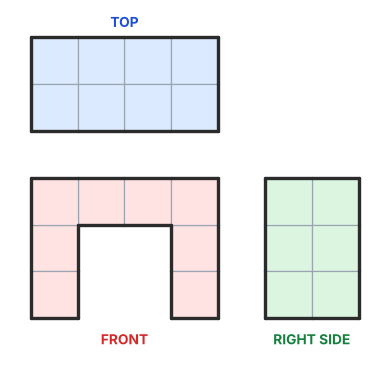
Answers: A = ___ B = ___ C = ___ D = ___
Exercise 4 · The missing view
The front and top views are given. Draw the right-side view.
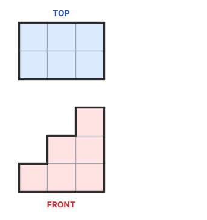
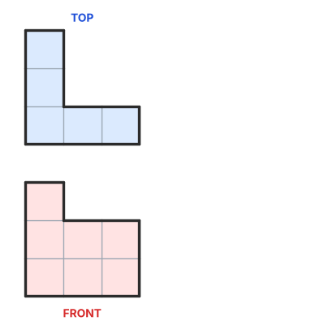
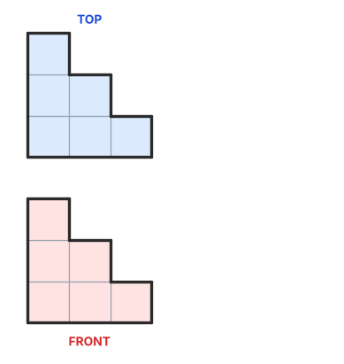
Exercise 5 · Frames made of cubes
Draw the three views on the grid and say which view shows the window.
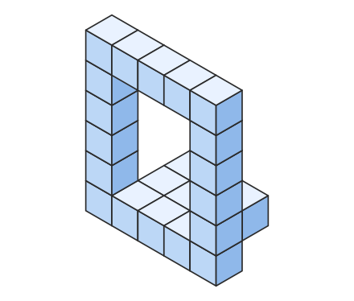
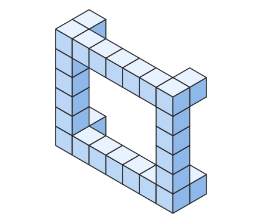
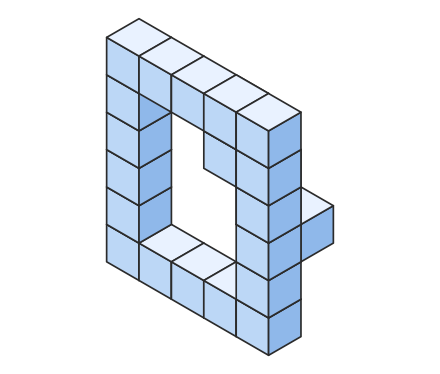
Exercise 6 · Draw your own frame
Choose one frame idea from the gallery. Draw its front view with the window size, then its isometric view on your isometric paper. Add three measurements.
isometric paper
Answer key
Top above the front, right side to the right.
Exercise 1
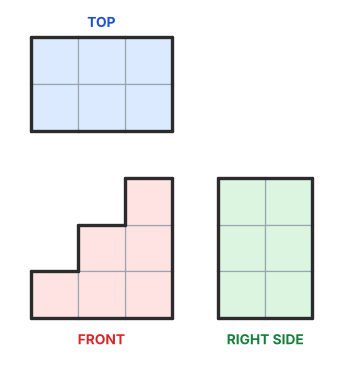
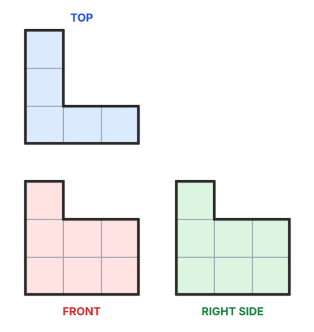
Exercise 4
Exercise 5
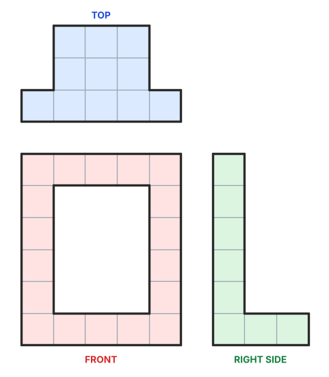
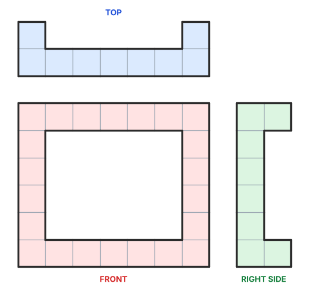
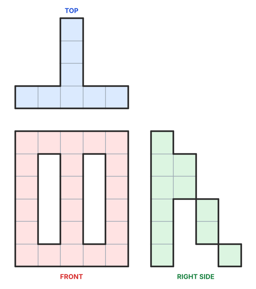
Exercise 2
Exercise 3
A = 3, B = 1, C = 4, D = 2